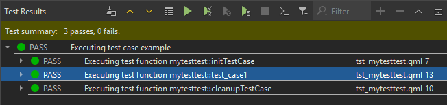

Test Results
View and filter test results in the Test Results view.

Qt Test Output
The Test Results view shows Qt and Qt Quick test results in XML format and other test results in plain text format.
XML can be parsed more easily and reliably than plain text. However, if a Qt or Qt Quick test crashes, it might not produce complete XML code that can be parsed, which might lead to information loss. You might see the lost information when viewing the results as plain text.
To view the results of Qt and Qt Quick tests as plain text, go to Preferences > Testing > Qt Test and then clear Use XML output. Then select  (Switch Between Visual and Text Display) in Test Results to switch to the text display.
(Switch Between Visual and Text Display) in Test Results to switch to the text display.
Summary of Messages
The following table lists the messages that Test Results shows.
| Result | Description |
|---|---|
| BENCH | Benchmark test. |
| DEBUG | Debug message. |
| FAIL | Test case failed. Double-click the line for more information. |
| FATAL | A fatal error occurred that stops the test case from being run, for example. |
| INFO | Informative message. |
| INTERNAL | Internal message. |
| PASS | Test case passed. |
| SKIP | Test case was skipped. |
| SYSTEM | An error message received from or influenced by the OS. |
| XFAIL | Test case is expected to fail, so it is marked by using the QEXPECT_FAIL macro. If the test case passes instead, an unexpected pass (XPASS) is written to the test log. |
| XPASS | Test case passed even though it was expected to fail. |
| WARN | Warning message. |
Filtering Test Results
To view only messages of a particular type, select  (Filter Test Results) and then select the types of messages to show.
(Filter Test Results) and then select the types of messages to show.
To show all messages, select Check All Filters.
To deselect all message types, select Uncheck All Filters.
Blacklisting Tests
Since Qt 5.4, you can add a BLACKLIST file for tests. It is mainly used internally by the Qt CI system.
| Result | Description |
|---|---|
| BFAIL | Blacklisted test case failed. |
| BPASS | Blacklisted test case passed. |
| BXFAIL | Blacklisted test case failed but was marked to be expected to fail. |
| BXPASS | Blacklisted test case passed even though it was expected to fail. |
See also How To: Test and Test Results.